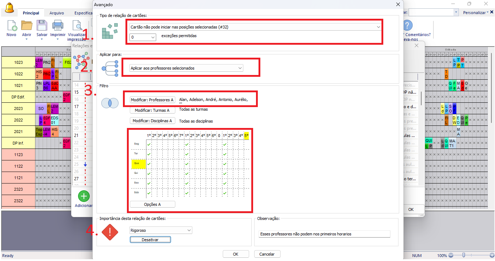

Detalhes do post:
Indisponibilidade de Docentes nos Horários Iniciais:
Descrição:Alguns professores pedem para que suas aulas não sejam nos primeiros horários
Para resolver esse tipo de situação devemos restringir a colocação dos cartões das aulas usando as relações entre cartões avançados (imagem “acesso a aba de restrições avançadas”).

1- Selecionar o tipo de relação: “cartão não pode iniciar nas posições selecionadas(#32)”;
obs: pode-se adicionar o número de exceções a essa relação na caixa logo abaixo do tipo de relação.
2- Selecionar a opção “aplicar aos professores selecionados” para que a restrição afete apenas aqueles docentes que sejam selecionados no “Filtro”.
3- Utilize o filtro “Modificar Professores” para escolher os professores que serão atingidos pela restrição.
4- Selecionar a importância da Restrição, entre: baixa, normal, alta, rigoroso ou otimizar; de acordo com a importância a ser atribuída a essa relação na instituição.
obs: nas duas opções abaixo “Modificar Turmas” e “Modificar Disciplinas” pode se manter aplicado à todos, não sendo necessário especificar apenas aquelas turmas que o professor dá aula, nem apenas aquelas disciplinas que ele ministra.
Utilizar o quadro de horários selecionando o primeiro horário de cada período e de cada dia, para que os cartões das aulas não tenham início em nenhum destes pontos. Se a restrição se aplicar apenas aos professores que lecionam na parte da manhã/tarde/noite ou porventura solicitam que a restrição apenas aconteça em alguns destes turnos, pode-se selecionar apenas os primeiros horários respectivos a esses turnos.
Também escreva uma observação que facilite a identificação da restrição e explique seu objetivo.
Clique em “ok” no canto inferior para salvar a relação.